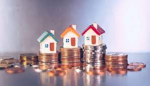

What is real estate?
Real estate is defined as the land and any permanent structures, like a home, or improvements attached to the land,
whether natural or man-made.
Real estate is a form of real property. It differs from personal property, which is not permanently attached to the land, such as vehicles, boats, jewelry, furniture, and farm equipment.
What You Should Know
About Real Estate Valuation

The value of real estate is necessary for a variety of endeavors, including financing, sales listing, investment analysis, property insurance, and taxation. But for most people, determining the asking or purchase price of a piece of real property is the most useful application of real estate valuation. This article will provide an introduction to the basic concepts and methods of real estate valuation, particularly as it pertains to sales.
Market Value
An appraisal is an opinion or estimate regarding the value of a particular property
as of a specific date. Appraisal reports are used by businesses, government agencies,
individuals, investors, and mortgage companies when making decisions regarding real estate transactions.
The goal of an appraisal is to determine a property's market value -
the most probable price that the property will bring in a competitive and open market.

Market price, the price at which property actually sells, may not always represent the market value.
For example, if a seller is under duress because of the threat of foreclosure, or if a private sale is held, the property may sell below its market value.